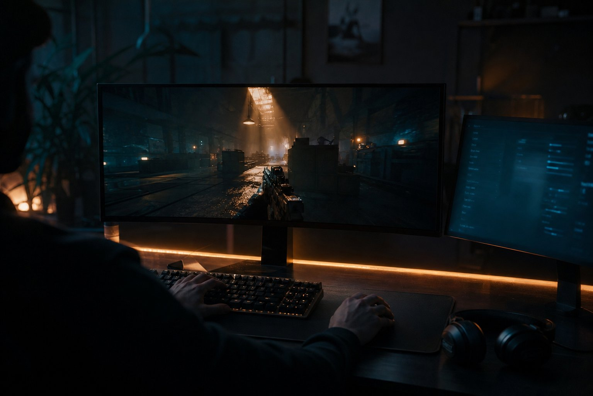

Guide avancé
Réglages & sensibilité : le preset qui change votre FPS
Aucun réglage ne remplace l'entraînement, mais un mauvais réglage coûte des kills à chaque raid. Ce guide couvre ce que la communauté documente réellement en 2026 : le preset de visibilité, le point central Focal Point, la sensibilité par grossissement, et les raccourcis qui libèrent les secondes où l'on se fait tuer.
Les valeurs de cette page sont des valeurs communautaires, pas des réglages éditoriaux : MoreFun n'a jamais publié de table de sensibilité officielle. Ce sont des points de départ cohérents, à ajuster à votre souris, à vos doigts et à votre style.

1. Focal Point : le point central, et son piège
Dans l'onglet Game des options se trouve Focal Point : un simple point blanc affiché au centre exact de l'écran. Ce n'est pas un réticule, pas un laser, pas un aimbot — c'est un repère de visée. Son usage est double : il vous permet de viser à hauteur de poitrine ou de tête en permanence, et il sert de repère de hip-fire dans les rooms où l'ADS serait trop lent.
Le piège à connaître absolument
Quand Focal Point est activé, vos balles ne partent pas exactement sur le point : elles partent légèrement à droite, et plus ou moins haut selon l'arme. Un joueur qui s'appuie sur le point sans corriger tire systématiquement à côté — et conclude à tort que le réglage est mauvais.
La correction se fait une fois pour toutes, au Stand de tir : videz un chargeur en hip-fire, ajustez jusqu'à ce que l'impact tombe pile sur la cible, et mémorisez l'écart. Chaque arme a son propre écart, mais l'ordre de grandeur se stabilise vite.
Focal Point ou pas ?
Ce n'est pas une question de force, c'est une question d'habitude. Si vous visez naturellement à hauteur de poitrine sans aucun repère, laissez-le éteint : un point au centre de l'écran finit par devenir une tâche visuelle que l'œil suit au lieu de regarder la cible. Activez-le si vous tirez « au-dessus » de vos ennemis, ou si vous avez du mal à tenir une hauteur en hip-fire. La communauté est massivement favorable à l'activation, mais le guide communautaire de référence note que certains joueurs le trouvent dérangeant.
2. La sensibilité : une par grossissement
La sensitivity ne se règle pas en un seul endroit. Elle vit dans Control → Global Control Settings, qui sépare deux blocs : la Mouse Sensitivity (la caméra) et l'Aim Sensitivity (la visée), cette dernière étant déclinée par grossissement. Déployez Aim Sensitivity et vous obtenez un curseur par optique : la documentation communautaire recense 1x, 1,6x, 2x, 3x, 3,5x, 4x, 6x, 7x et 10x, chacun réglable de 0,10 à 4,00.
| Réglage | Ce que c'est | Règle pratique |
|---|---|---|
| DPI | La résolution physique de la souris | Une valeur fixe et comfortable — 400 DPI est la valeur la plus fréquemment citée par la communauté, mais l'essentiel est de ne plus y toucher |
| Mouse Sensitivity | La vitesse de rotation de la caméra | Plutôt basse. Les micro-corrections de visée gagnent toujours à une sensibilité réduite |
| Aim Sensitivity 1x | La visée sans grossissement | Calibrée sur l'hip-fire : si vous ratez à gauche, montez ; à droite, descendez |
| Aim Sensitivity par zoom | Un curseur par optique | Gardez les valeurs proches les unes des autres : une rupture brutale entre 1x et 4x détruit la mémoire musculaire |
| Optiques combinées | 1x/6x ou 1x/4x sur la même lunette | Ces montages se comportent comme s'ils utilisaient la valeur 1x : étalonnez le montage complet, pas l'optique isolée |
La seule règle qui compte
Choisissez une valeur et tenez-la. Le premier ennemi tué avec une sensibilité nouvelle est toujours un hasard : votre main doit réapprendre. Les guides communautaires les plus lus convergent sur ce point — la régularité de la valeur est plus importante que la valeur elle-même.
Le preset indicatif de la Saison 7
La configuration de référence relevée sur le client de la Saison 7, en octobre 2026, est la suivante : Mouse Sensitivity 0,40 et Aim Sensitivity 0,26. Le repère tient en une phrase : l'Aim Sensitivity de base est réglée légèrement plus basse que la sensibilité caméra, pour que le point rouge et le fer de visée suivent l'hip-fire à peu près au même rythme. Les optiques grossissantes se réduisent ensuite : une 6x doit déplacer beaucoup moins le réticule par centimètre qu'une 1x, sinon le réticule passe à côté de la cible. Le champ de vision se joue dans la même logique — 90 à 100 est la plage compétitive la plus citée, parce qu'un FOV trop large rapetisse les cibles lointaines et qu'un FOV trop étroit retire de la vision périphérique. Ce sont des repères de départ, pas une norme : la seule valeur qui compte est celle que vous tenez d'un raid à l'autre. Communautaire
Quand votre visée devient pâteuse : la M290
Si votre souris vous paraît soudain lente au milieu d'un combat, ne rebrouillez pas vos réglages : les notes officielles de la Saison 7 précisent que la grenade stun M290 « inflige une acouphène, un ralentissement et réduit la sensibilité de la souris des unités à portée ». Concrètement, une détonation de M290 transforme votre visée en bouillie pendant quelques secondes, et l'image reste partiellement brouillée si vous regardiez l'explosion. C'est un effet de jeu, pas une dérive de votre configuration : vérifiez seulement que vous n'avez pas abaissé votre sensibilité entre deux raids, et vous éviterez de corriger un réglage qui était bon. Officiel
3. Le preset visibilité et FPS
Le preset ci-dessous est celui que documente le guide communautaire de réglages dédié à la Saison 7 (mis à jour le 26 octobre 2026). Il part d'un principe simple : le rendu doit servir l'information, pas l'empêcher. Dans une zone où l'on cherche un ennemi derrière un buisson, la végétation « haute » est une obstruction, pas un décor.
| Catégorie | Réglage |
|---|---|
| Affichage | Résolution native · plein écran · FPS max = taux de rafraîchissement − 3 · synchronisation verticale désactivée |
| Mise à l'échelle | DLSS (modèle Transformer) ou FSR · qualité · interpolation d'image désactivée · Reflex activé |
| Élevé | Distance d'affichage · résolution · qualité des textures (si la VRAM le permet) · qualité des scopes |
| Bas / Performance | Ombres · effets · végétation · shaders · lumière · détails du monde · post-traitement |
| Désactivé | Subdivision de surface du terrain · lancer de rayons · flou de tir (Firing Blur) |
| Post-traitement | Luminosité ~ 1,0 · saturation légèrement augmentée · contraste bas · netteté 2 à 4 |
| Jeu | Champ de vision, distance zéro par défaut, options du HUD, flou de tir, netteté sous sédatif, Focal Point, couleur de l'effet d'impact |
Le réglage qui vaut plus que les autres : le son
Un casque audio correct et des pas au volume maximal font plus pour votre survie qu'un upgrade d'armure. Le guide communautaire « ULTIMATE TIPS N' TRICKS 3.0 » et les retours de joueurs convergent : entendre l'ennemi avant de le voir décide plus de combats que n'importe quel réglage graphique. Un casque à 15 K comme le SH12 est cité comme un excellent rapport prix/prix, parce qu'il apporte à la fois une bonne audition et de bonnes chances de ricochet.
Deux options de l'onglet Game que les presets oublient
- Border Brightness Settings — règle la luminosité du contour qui cerne les objets à ramasser. Réglé sur High, il rend le loot nettement plus repérable dans une pièce sombre : c'est du temps gagné au ramassage, donc de l'économie, pas du confort.
- Scope Quality — la qualité de l'image dans la lunette. C'est le dernier budget d'images à ne pas rogner pour un sniper ou un DMR : une image interne molle fait perdre l'avantage que vous avez payé en optique.
Valeurs issues des retours de joueurs cités par le guide communautaire de réglages du 26 octobre 2026 — Communautaire.
4. Les raccourcis qui changent un raid
Les raccourcis par défaut ne sont pas faux, mais ils sont rarement optimaux. Le preset communautaire le plus cité pour le combat est celui-ci :
| Action | Raccourci recommandé | Pourquoi |
|---|---|---|
| Viser | Molette gauche | Maintenir la visée stabilise le tir ; l'ADS au clic droit perd une fraction de seconde |
| Tirer | Molette droite | Réponse immédiate, et le doigt reste disponible pour l'index gauche |
| Retenir sa respiration | Molette gauche en visée (LB) | En mode ADS, on peutaliser la compensation de recul |
| Vérifier le chargeur | Alt + T | Sans quitter la visée, le contrôle de munition devient un réflexe |
| Recharger | Alt + V | Rechargement sans sortir de l'axe de visée |
| Mode de tir | B | Bascule automatique/semi/rafale sous le pouce |
| Regard libre | Alt | Regarder sans pivoter — la base du jiggle peek |
| Priorité d supplying | Activée | Le loot est ramassé en priorité plutôt que dispersé dans l'inventaire |
| Déplacement des objets au double-clic | Désactivé | Évite le glisser-déposer accidentel — la cause n°1 de munitions perdues |
Le double-clic qui coûte cher
Désactiver le « double-clic pour déplacer un objet » est le réglage le plus sous-estimé du jeu. En plein combat, un double-clic malencontreux sur une pile de munitions la déplace dans le sac à dos — ou hors de la Secure Case — et cette perte est définitive. Le double-clic reste utile comme outil d'inspection : il affiche la valeur estimée de l'objet, ce qui remplace avantageusement une table de prix mémorisée par cœur.
5. Ce que les réglages ne corrigent pas
Une sensitivity parfaite ne sauve pas une mauvaise posture. Les gestes invariants que la communauté répète, et que les réglages ne remplacent pas :
- Peakez toujours du côté droit. La position de l'épaule dominante détermine ce que l'ennemi voit en premier. Peak à gauche et vous offrez votre profil ; peak à droite et vous gardez l'initiative.
- Jiggle peek avec Alt enfoncé. Maintenir le regard libre permet de repérer l'angle sans exposer le corps — c'est le geste qui précède le wide peek.
- Gardez le reticule à hauteur de poitrine. Le guide communautaire le dit en toutes lettres : « cessez de viser le sol ». Les kills gratuits viennent de là, pas du recoil control.
- 10 à 15 minutes par jour suffisent. C'est la durée d'entraînement que le consensus communautaire donne pour un niveau « divin » en un mois, à condition d'être constante.
- Appuyez sur M pendant la file d'attente. La carte affiche votre point d'apparition et la position des autres joueurs : c'est l'outil gratuit le plus sous-utilisé du jeu pour éviter les rushs de spawn.
6. Questions fréquentes
Focal Point : est-ce que ça ne rend pas tricher ?
Non. C'est un simple point d'affichage, présent dans les options par défaut de l'éditeur, recommandé par les guides communautaires et disponible sur PC comme sur mobile. Il n'assiste en aucune manière la visée : il vous donne un repère de référence, à charge de vous de l'utiliser.
Quelle sensibilité choisir pour commencer ?
Une valeur basse et fixe. Les configurations les plus citées se situent autour de 400 DPI / mouse sensitivity 0,29 / aim sensitivity 0,30, mais ce sont les réglages d'un joueur, pas une norme : l'important est de ne plus les changer ensuite. Calibrez le 1x sur le stand de tir, puis vérifiez que le passage à 4x ne vous fait pas perdre la cible.
Le preset de visibilité change-t-il l'avantage compétitif ?
Non, et c'est important de le dire : le rendu est identique pour tous les joueurs du même serveur. Ce que le preset change, c'est votre confort visuel — et donc votre vitesse de lecture d'une zone. Un joueur qui repère un ennemi à 40 mètres grâce à une végétation désactivée gagne du temps sur celui qui le cherche dans le décor.
Comment savoir si ma configuration est bonne ?
Trois tests, dans cet ordre : le stand de tir pour l'écart de la visée, le mode Secure Ops pour la sensibilité (aucun gear à perdre, aucune conséquence économique), et un raid à vide pour vérifier que les raccourcis sont sous la main. Une configuration qui exige de regarder son clavier est une configuration ratée.
7. Sources
Officiel
- Season 7 Update Announcement — grenade stun M290 — description officielle de la M290 : détonation retardée, insensible aux obstacles, acouphène, ralentissement, réduction de la sensibilité de la souris dans le rayon et perturbation de la vision des unités regardant l'explosion. patchbot.io (nouvel onglet)
Communautaire
- Best Settings (Season 7) — visibilité, FPS et sensibilité — emplacement de Focal Point dans l'onglet Game, curseurs d'Aim Sensitivity par grossissement, preset de visibilité complet, mise à jour du 26 octobre 2026. timesaver.gg (nouvel onglet)
- ULTIMATE TIPS N' TRICKS GUIDE 3.0 — le guide communautaire de référence : Focal Point et son décalage de visée, réglage du réticule à hauteur de poitrine, DPI et sensibilités, désactivation du double-clic, temps d'entraînement recommandé. reddit.com (nouvel onglet)
- Best Settings : 1080p 144 FPS et pas au maximum — touches recommandées, volume des pas, DLSS/FSR, champ de vision. bittopup.com (nouvel onglet)
- Give me your one piece of advice for a beginner — Focal Point en hip-fire, 1x/4x sur toutes les armes, mark de 2 à 3 balles au torse, appui sur le retrait du recul vers la tête. reddit.com (nouvel onglet)
- Any tips for newbies playing their first extraction shooter? — peak du côté droit, observation libre au clic central, sac de rangement pour les munitions, chargeur rempli depuis le conteneur. reddit.com (nouvel onglet)
À vérifier
- MoreFun n'a jamais publié de table de sensibilité ni de réglage officiel : tous les chiffres ci-dessus sont des conventions communautaires. Elles restent valables tant que le patch ne modifie pas le modèle de visée, ce que le patch 1.0.0.142.19 n'a pas fait.
- La Saison 8 n'est pas annoncée au 17 novembre 2026 : un changement du modèle de visée ou des options est possible à la rentrée de saison et invaliderait une partie de cette page.